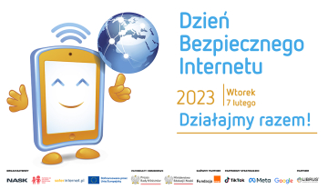

$Uważaj co potwierdzasz i na jakie strony wchodzisz! W tym momencie mógłbyś stracić dane.$
07.02.2023 - to Dzień Bezpieczengo Internetu!

-->
Przeczytaj i bądź bezpieczny w sieci
10 ZASAD BEZPIECZENGO KORZYSTANIA Z INTERNETU:
1. Ogranicz dane osobowe, które udostępniasz w sieci
2. Używaj silnych i unikalnych haseł
3. Używaj weryfikacji dwuetapowej
4. Nie korzystaj z jednej skrzynki pocztowej
5. Skasuj niepotrzebne/nieużywane konta
6. Uważaj na phishing i ransomware – podejrzane maile i SMS-y
7. Zainstaluj mocny program antywirusowy
8. Używaj sieci Tor i/lub VPN
9. Unikaj przeglądania stron bez certyfikatu SSL
Sprawdź w lewym górnym rogu czy poprzednia strona ma certyfikat bezpieczeństwa SSL
10. Odwiedzaj jedynie bezpieczne strony.
Chcesz dowiedzieć się więcej? Odwiedź platformę edukacyjną saferinternet.pl:
Kliknij, aby przejść do platformy!
Inicjatywa na rzecz Polskiego Centrum Programu Safer Internet 2023
Zespół Szkół Nr 2 im. Jędrzeja Śniadeckiego w Szczytnie
https://kwestiabezpieczenstwa.pl/zasady-bezpiecznego-korzystania-z-internetu/ z dnia 06.02.2023
https://edukacja.fdds.pl/ z dnia 06.02.2023
https://cyberbezpieczenstwo.wp.pl/uwazaj-komu-podajesz-swoje-dane-mozesz-stracic-wszystko z dnia 06.02.2023